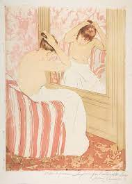

121. The Coiffure. Mary Cassatt. 1890-1891 CE Drypoint and Aquatint.
- Form
- No posing or acting; the figures possess a natural charm
- Cassatt’s work possesses a tenderness foreign to other Impressionists
- The figures are from everyday life
- Pastel color scheme
- The work contains contrasting sensuous curves of the female figure with straight lines of the furniture and wall.
- Japanese influence
- Decorative charm
- Japanese hair style
- Japanese point of view: figure seen from the back
- Graceful lines of the neck
- Function
- Paty of a series of ten prints exhibited together at a Paris gallery in 1891
- Technique
- Drypoint and aquatint
- Drypoint yields soft dense lines
- Aquatint is generally used with engravings like drypoint; it also yields flat colored areas on a print
- Context
- Cassatt’s world is filled with women; women as independent and not needing men to complete themselves; women who enjoy the company of other women
- The mother and child theme is a specialty of Cassatt
- She is among the first Impressionist artists seen in the USA
- She acted as an advisor to wealthy American collectors as to what Impressionist works to buy